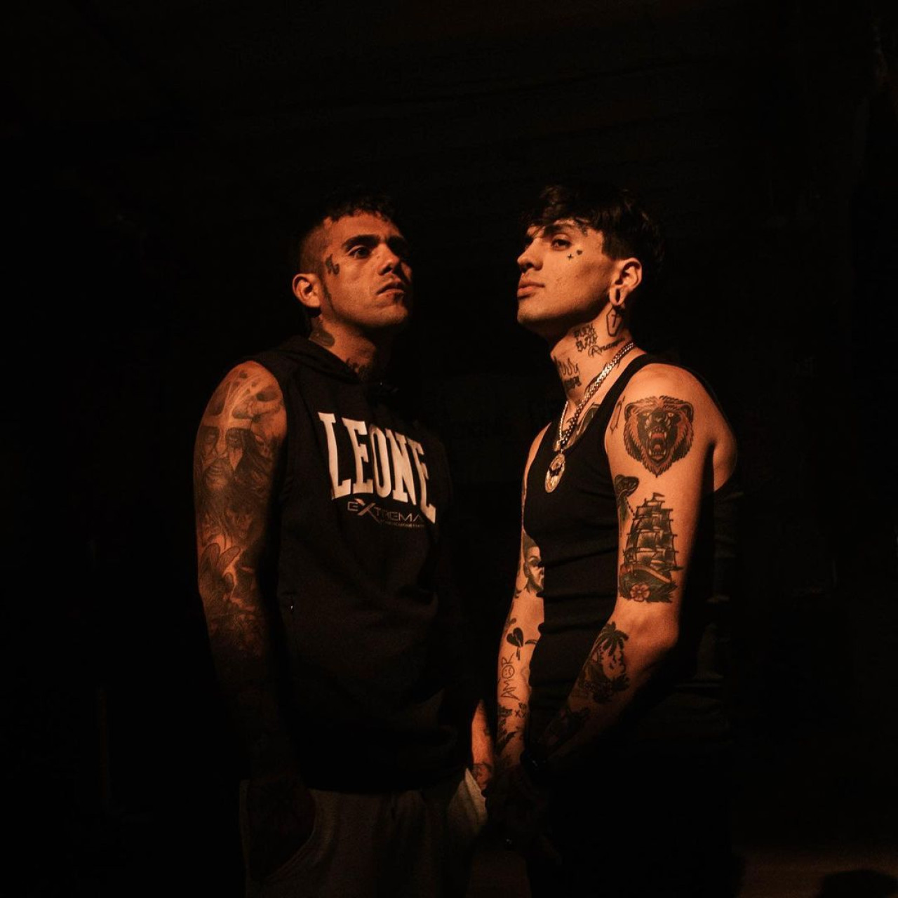
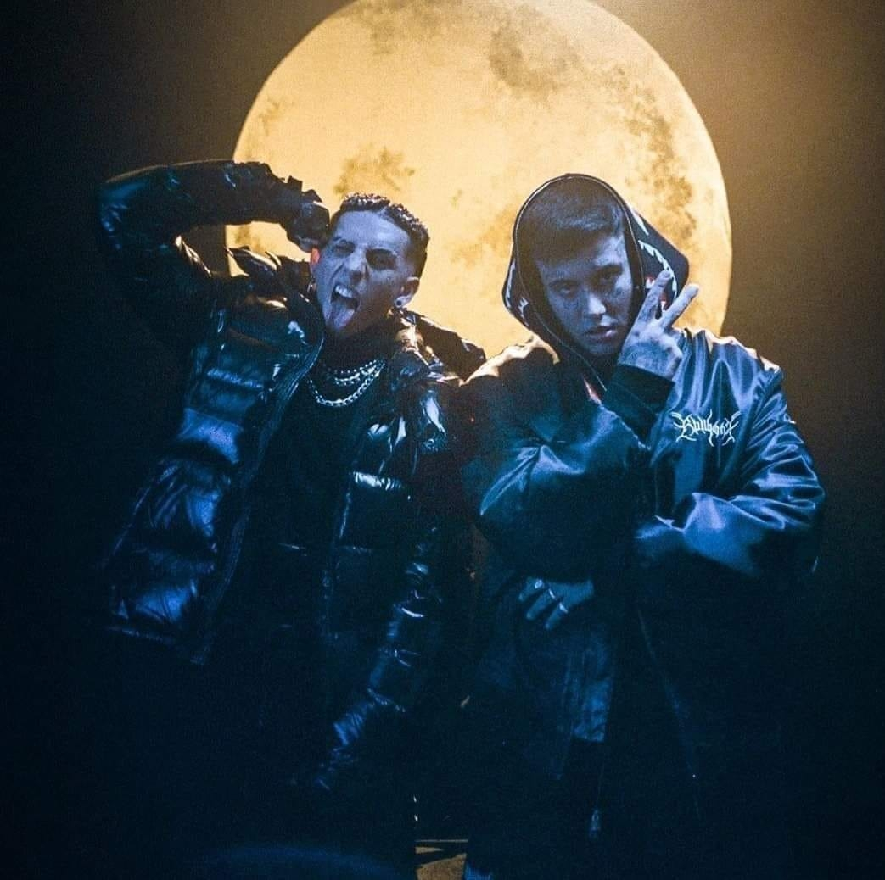

Argentina ha sido un semillero de talento musical, produciendo una variedad de grupos que abarcan múltiples géneros y estilos. Entre ellos, destacan Modo Diablo, Los de la Casa, Barderos, Vampiros, y Hitboys, cada uno aportando su propia energía y creatividad a la vibrante escena musical del país.
Modo Diablo

Modo Diablo es un trío de trap argentino que se ha consolidado como uno de los principales exponentes del género en América Latina. Integrado por Duki, Ysy A y Neo Pistea, el grupo se caracteriza por sus letras crudas y auténticas, que reflejan la vida urbana y las experiencias personales de sus miembros. Sus temas suelen estar cargados de ritmos intensos y una producción moderna que resuena con la juventud argentina y de otros países de habla hispana. Modo Diablo ha sido fundamental en popularizar el trap en la región y en establecer un estilo distintivo que mezcla influencias locales con el sonido global del género.
Los de la Casa

Los de la Casa es un colectivo musical que fusiona diferentes géneros como el rap, el reggae, el funk y el rock, creando un sonido ecléctico y único. Su música se destaca por las letras conscientes y sociales, abordando temas como la desigualdad, la vida en los barrios y la identidad cultural. La banda se formó en el ámbito independiente y ha ganado una gran cantidad de seguidores gracias a su autenticidad y energía en vivo. Los de la Casa representan una mezcla vibrante de ritmos y mensajes, resonando con una amplia audiencia en Argentina.
Barderos

Barderos es un dúo de rap integrado por C.R.O y Homer El Mero Mero, originarios de Neuquén. Su estilo se caracteriza por un rap crudo y directo, con letras que narran experiencias personales y del entorno urbano. Barderos ha logrado destacarse en la escena del rap argentino por su honestidad lírica y su habilidad para contar historias reales con una producción musical sólida. Sus canciones suelen explorar temas de la calle, la lucha diaria y la resistencia, resonando fuertemente con sus oyentes.
Vampiros
Vampiros es una banda emergente que mezcla el rock alternativo con elementos del post-punk y el indie. Con un sonido oscuro y atmosférico, sus canciones exploran temas de introspección, amor y desamor, y la condición humana. La banda se distingue por su estética gótica y sus presentaciones en vivo llenas de energía y misticismo. Vampiros ha capturado la atención del público joven que busca algo diferente en la escena musical argentina, destacándose por su creatividad y originalidad.
Hitboys

Hitboys es un colectivo de productores y artistas que se especializa en la creación de hits urbanos, abarcando géneros como el trap, el reggaetón y el pop. Con una producción pulida y un enfoque en la creación de melodías pegajosas, Hitboys ha colaborado con numerosos artistas emergentes y establecidos, ayudando a dar forma al sonido contemporáneo de la música urbana en Argentina. Su habilidad para fusionar ritmos latinos con influencias globales los ha convertido en un referente en la industria musical del país.
Estos grupos y colectivos reflejan la diversidad y riqueza de la escena musical argentina. Desde el trap crudo de Modo Diablo hasta las fusiones eclécticas de Los de la Casa, el rap auténtico de Barderos, el rock atmosférico de Vampiros y los hits urbanos de Hitboys, cada uno de estos grupos aporta su propio estilo y voz, contribuyendo a un panorama musical vibrante y en constante evolución.